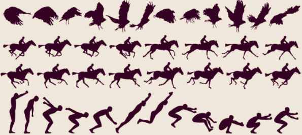

P1-教程文档
教程来源于：
Pygame介绍
Python 是当下最为火热，且功能最为全面的一门编程语言。Python 之所以深受大家喜爱， 除了可以被应用到“人工智能”领域之外，还可以延伸到数据分析、Web 开发、自动化测试、自然语言处理、游戏开发等各个领域。这一切的实现得益于 Python 有一个强大的第三方库（网址：https://pypi.org/），这个第三方库相当于一个手机软件市场，允许我们随意下载各式各样的软件包，并且开箱即用，这大大提高了 Python 语言的编程效率和实用性。
“如果说我比其他人看的更远，那是因为我站在巨人的肩膀上。”第三方库就相当于巨人，它为程序开发者们提供了众多现成的模块。
接下来，我们要讲的 Pygame 就是第三库中非常有趣、实用的一个模块。
顾名思义，Pygame 是一个专门用来开发游戏的 Python 模块，主要为开发、设计 2D 电子游戏而生，它是一个免费、开源的第三方软件包，支持多种操作系统，具有良好的跨平台性（比如 Windows、Linux、Mac 等）。Pygame 是 Pete Shinners 在 SDL（Simple DirectMedia Layer，一套开源的跨平台多媒体开发库）基础上开发而来，其目的是取代 PySDL。
截止到 2020 年 10 月 28 日，Pygame 已经诞生 20 周年。
SDL 是一套开放源代码的跨平台多媒体开发库，使用 C语言编写，它提供了多种控制图像、声音、输入/输出的函数，Pygame 可以看做是对 SDL 的封装，在 SDL 库基础上提供了各种 Python 的 API接口。目前 SDL 主要用于多媒体领域，比如开发游戏、模拟器、媒体播放器等。
通过 Pygame 我们能够创建各种各样的游戏和多媒体程序，但相比于开发大型 3D 游戏来说，它更擅长与开发 2D 游戏，比如扫雷、纸牌游戏、贪吃蛇、超级马里奥、飞机大战等，如果是 3D 游戏，可以选择一些功能更为全面的 Python 游戏开发库，比如 Panda3D（迪士尼开发的3D游戏引擎），PyOgre（Ogre 3D渲染引擎）等。
Python 作为一门解释型语言并不适合开发大型的 3D 游戏，但 Python 通过对其他语言的接口封装，使自身具备了开发大型 3D 游戏的能力，例如 Panda3D 的底层是用 C++ 语言编写的。一些较为知名的 3D 游戏，比如魔兽世界、文明帝国4、战地风云2，这些游戏都是使用 Python 语言开发的，而国内较为知名的“阴阳师”手游，也是由 Python 语言开发而成。
“俗话说，术业有专攻”，每一种语言都有自己擅长的一方面，不能因为某种语言不适合某一领域，就认为它是劣质语言。
Pygame 官方网站（https://www.pygame.org/tags/all）提供许多丰富的游戏案例，它们全部使用 Pygame 开发。
通过官网可以很方便地找到并下载这些游戏。—> 点击前往。这些项目案例能为您开发自己的游戏提供一些思路和帮助。
假如您从来没有接触过游戏开发，那么学习 Pygame 是一个不错的选择，它非常适合初学者学习，您可以把它当做进入游戏开发世界的“敲门砖”，通过对 Pygame 的学习，您将了解到更为广阔的世界。
扩展知识
如果您想做专业的游戏开发工程师，建议学习 C/C++、C# 语言，这些语言虽然语法略显复杂，但是其性能相比于 Python 来说要好的多。就当下而言，市面上最为流行的游戏开发平台（即游戏引擎）分别是 Unity和 UE4，这两个平台的侧重点不同，前者适合于移动端游戏的开发（支持 C# 语言），而后者更偏向于 PC 端游戏的开发（支持 C++ 语言），此处不做深入探讨，如果您对它们感兴趣的话，可以自行研究。
UE4 和 Uinty 开发了许多优秀的游戏，比如 UE4 开发了《绝地求生：刺激战场》，而 Unity 开发了《使命召唤手游版》。
下载
pip install pygame
第一个Pygame程序
#导入所需的模块
import sys
import pygame
# 使用pygame之前必须初始化
pygame.init()
# 设置主屏窗口
screen = pygame.display.set_mode((400,400))
# 设置窗口的标题，即游戏名称
pygame.display.set_icon(pygame.image.load('1.png').convert())
pygame.display.set_caption('编程启航')
# 固定代码段，实现点击"X"号退出界面的功能，几乎所有的pygame都会使用该段代码
while True:
# 循环获取事件，监听事件状态
for event in pygame.event.get():
# 判断用户是否点了"X"关闭按钮,并执行if代码段
if event.type == pygame.QUIT:
#卸载所有模块
pygame.quit()
#终止程序，确保退出程序
sys.exit()
pygame.display.flip() #更新屏幕内容
Display显示模块
Pygame 使用pygame.display显示模块中的方法创建游戏的主窗口：
screen = pygame.display.set_mode(size=(),flags=0)
上述函数有两个参数常用参数：
- size：元组参数，用来设置主窗口的大小
- flags：功能标志位，表示创建的主窗口样式，比如创建全屏窗口、无边框窗口等，flags 参数值见下表。
| 标志位 |
功能 |
| pygame.FULLSCREEN |
创建一个全屏窗口。 |
| pygame.HWSURFACE |
创建一个硬件加速窗口，必须和 FULLSCREEN 同时使用。 |
| pygame.OPENGL |
创建一个 OPENGL 渲染窗口。 |
| pygame.RESIZABLE |
创建一个可以改变大小的窗口。 |
| pygame.DOUBLEBUF |
创建一个双缓冲区窗口，建议在 HWSURFACE 或者 OPENGL 时使用。 |
| pygame.NOFRAME |
创建一个没有边框的窗口。 |
体验过电脑游戏的朋友们都知道，当运行程序后会在电脑桌面上出现一个游戏的主窗口，这个主窗口的本质是一个 surface 对象，把理解为画布、画板、白纸在合适不过了，它相当于一个载体，用于承载一切游戏所用到的元素。假如您需要将一段文本方放置到主窗口中，那么您需要先创建一个包含文本的 surface 对象，之后再将它附加到主窗口上。简单的理解，就是将一张图 A 粘贴到另一张图 B 上。
主窗口（screen）相当于游戏程序中尺寸最大的 Surface 对象，在这个最大的“画布”中，我们还可以添加其他“小”的 Surface 对象，这些对象以矩形的形式存在于主窗口中，它们共同组成了一个游戏程序。通过下列方法可以将一个 Surface 对象粘贴至主窗口上：
scrren.blit(source, dest, area=None, special_flags = 0)
下面对上述参数做简单的介绍：
- source：表示要粘贴的 Surface 对象。
- dest：主窗口中的一个标识的坐标位置，可以接受一个 (x,y) 元组，或者 (x,y,width,height) 元组，也可以是一个 Rect 对象；
- area：接受一个 Rect 对象，默认为 None，如果提供该参数则相当于抠图操作，即在屏幕的指定区域显示想要的内容；
- special_flags：可选参数，它是 Pygame.1.8 版本新增的功能，用于指定对应位置颜色的混合方式，参数值有 BLEND_RGBA_ADD、BLEND_SUB 等。如果不提供该参数的情况下，默认使用 source 的颜色覆盖 screen 的颜色。
除了创建游戏的主窗口之外，display 模块还提供了许多的和“显示”相关的方法，比如设置游戏窗口的名称，如下表所示：
# 设置窗口的标题，即游戏名称
pygame.display.set_icon(pygame.image.load('1.png').convert())
pygame.display.set_caption('编程启航')
pygame.display 模块还提供了一些和“显示”相关的其他方法，如下表所示：
| 方法名称 |
说明 |
| pygame.display.get_surface() |
获取当前显示的 Surface 对象。 |
| pygame.display.flip() |
更新整个待显示的 Surface 对象到屏幕上。 |
| pygame.display.update() |
更新部分软件界面显示。 |
| pygame.display.Info() |
产生一个 VideoInfo 对象，包含了显示界面的相关信息。 |
| pygame.display.set_icon() |
设置左上角的游戏图标，图标尺寸大小为 32*32。 |
| pygame.display.iconify() |
将显示的主窗口即 Surface 对象最小化，或者隐藏。 |
| pygame.display.get_active() |
当前显示界面显示在屏幕上时返回 True，如果窗口被隐藏和最小化则返回 False。 |
Surface画板图像
Pygame 针对文本、图像、颜色提供了不同模块来生成它们各自的 Surface 对象。Surface 模块是Pygame 中专门用来新建图像的，通过该模块可以创建一个 Surface 对象，语法格式如下：
Surface=pygame.Surface(size=(width,height),flags,depth)
参数函数如下：
- size：表示 Surface 对象的矩形区域大小；
- flags：功能标志位，有两个可选参数值 HWSURFACE 和 SPCALPHA，前者代表将创建的 Surface 对象存放于显存中，后者表示让图像的每一个像素都包含一个 alpha 通道
- depth：指定像素的颜色深度，默认为自适应模式，由 Pygame 自动调节。
注意，如果不设置尺寸，Surface 默认创建一个和主游戏屏幕同样大小的区域。
Surface 模块还提供了处理图像的其他方法，下表对它们做了简单的介绍：
| 方法 |
说明 |
| pygame.Surface.blit() |
将一个图像（Surface 对象）绘制到另一个图像上 |
| pygame.Surface.convert() |
修改图像（Surface 对象）的像素格式 |
| pygame.Surface.fill() |
使用纯色填充 Surface 对象 |
| pygame.Surface.scroll() |
复制并移动 Surface 对象 |
| pygame.Surface.set_alpha() |
设置整个图像的透明度 |
| pygame.Surface.get_at() |
获取一个像素的颜色值 |
| pygame.Surface.set_at() |
设置一个像素的颜色值 |
| pygame.Surface.get_palette() |
获取 Surface 对象 8 位索引的调色板 |
| pygame.Surface.map_rgb() |
将一个 RGBA 颜色转换为映射的颜色值 |
| pygame.Surface.set_clip() |
设置该 Surface 对象的当前剪切区域 |
| pygame.Surface.subsurface() |
根据父对象创建一个新的子 Surface 对象 |
| pygame.Surface.get_offset() |
获取子 Surface 对象在父对象中的偏移位置 |
| pygame.Surface.get_size() |
获取 Surface 对象的尺寸 |
除了使用 Surface 模块新建图像外，我们还可以使用另外一种方法从外部加载图像，如下所示：
pygame.image.load("图片路径").convert()
上述方法将被加载的图像作为 Surface 对象来使用，因此它可以调用上述表格中所有方法。注意，此处之所以使用 convert(）来转换被加载图片的像素格式，是为了提升 Pygame 对图片的处理速度，该操作能够保证图像的像素格式与图片的显示格式是相同的。
通过 image.load() 方法可以加载游戏的背景图，或者游戏中使用的其他元素，比如的人物、道具等等。
import pygame
#引入pygame中所有常量，比如 QUIT
from pygame.locals import *
pygame.init()
screen = pygame.display.set_mode((500,250))
pygame.display.set_caption('编程启航')
#加载一张图片
image_surface = pygame.image.load("bg.png").convert()
# rect(left,top,width,height)指定图片上某个区域
# special_flags功能标志位,指定颜色混合模式，默认为 0 表示用纯色填充
image_surface.fill((0,0,255),rect=(100,100,100,50),special_flags=0)
# 200,100 表示图像在水平、垂直方向上的偏移量，以左上角为坐标原点
image_surface.scroll(100,50)
# 无限循环，让窗口停留
while True:
for event in pygame.event.get():
if event.type == QUIT:
exit()
# 将图像放置在主屏幕上
screen.blit(image_surface,(0,0))
pygame.display.update()
Transform图像操作
pygame.transform 模块允许您对加载、创建后的图像进行一系列操作，比如调整图像大小、旋转图片等操作，常用方法如下所示：
| 方法 |
说明 |
| pygame.transform.scale() |
将图片缩放至指定的大小，并返回一个新的 Surface 对象。 |
| pygame.transform.rotate() |
将图片旋转至指定的角度。 |
| pygame.transform.rotozoom() |
以角度旋转图像，同时将图像缩小或放大至指定的倍数。 |
import pygame
#引入pygame中所有常量，比如 QUIT
from pygame.locals import *
pygame.init()
screen = pygame.display.set_mode((500,250))
pygame.display.set_caption('编程启航')
#加载一张图片（455*191)
image_surface = pygame.image.load("bg.png").convert()
image_new = pygame.transform.scale(image_surface,(300,300))
# 查看新生成的图片的对象类型
#print(type(image_new))
# 对新生成的图像进行旋转至45度
image_1 =pygame.transform.rotate(image_new,45)
# 使用rotozoom() 旋转 0 度，将图像缩小0.5倍
image_2 = pygame.transform.rotozoom(image_1,0,0.5)
while True:
for event in pygame.event.get():
if event.type == QUIT:
exit()
# 将最后生成的image_2添加到显示屏幕上
screen.blit(image_2,(0,0))
pygame.display.update()
Time时间控制
pygame.time 时间控制模块，是 Pygame 中使用频率较高的模块，其主要功能是管理时间和游戏帧数率（即 FPS）。
时间在游戏开发中承担着非常重要的作用，比如释放某个技能所消耗的时间，或者播放动画、声音的持续时间，这些都需要时间来管理。time 模块另外一个重要作用是控制游戏帧数率（即 FPS），它是评价游戏画面是否流畅的关键指标。在一般情况下，计算机的 FPS 都能达到 60帧/s 的速度，这足够我们使用，如果当帧数小于 30 的时候，游戏画面就会变得卡顿。
注意，在 Pygame 中时间以毫秒为单位（1秒=1000毫秒），这样会使游戏的设计更为精细。
1) 游戏暂停
Pygame.time 模块提供了以下常用方法，如下表所示：
Pygame.time 模块提供了以下常用方法，如下表所示：
| 方法 |
说明 |
| pygame.time.get_ticks() |
以毫秒为单位获取时间 |
| pygame.time.wait() |
使程序暂停一段时间 |
| pygame.time.set_timer() |
创建一个定时器，即每隔一段时间，去执行一些动作 |
| pygame.time.Clock() |
创建一个时钟对象来帮我们确定游戏要以多大的帧数运行 |
下面看一组简单的示例：
import pygame
pygame.init()
screen = pygame.display.set_mode((500,500))
pygame.display.set_caption('编程启航')
# 获取以毫秒为单位的时间
t = pygame.time.get_ticks() #该时间指的从pygame初始化后开始计算，到调用该函数为止
t1 =pygame.time.wait(3000) #暂停游戏3000毫秒
print(t1)
#暂停t1时间后，加载图片
image_surface = pygame.image.load("bg.png")
while True:
for event in pygame.event.get():
if event.type == pygame.QUIT:
exit()
screen.blit(image_surface,(0,0))
pygame.display.update()
2) 设置游戏FPS
若想设置游戏的帧数率（FPS）可以通过 Clock() 方法来实现，该对象提供了以下常用方法：
| 方法 |
说明 |
| pygame.time.Clock.tick() |
更新clock对象 |
| pygame.time.Clock.get_time() |
获取上一个tick中的时间 |
| pygame.time.Clock.get_fps() |
计算clock对象的帧率 |
下面看一组简单的应用示例：
import pygame
pygame.init()
screen = pygame.display.set_mode((500,300))
pygame.display.set_caption('编程启航')
# 获取以毫秒为单位的时间
t = pygame.time.get_ticks() #该时间指的从pygame初始化后开始计算，到调用该函数为止
t1 =pygame.time.delay(3000) #暂停游戏3000毫秒
print(t1)
#暂停t1时间后，加载图片
image_surface = pygame.image.load("bg.png")
#创建时钟对象（控制游戏的FPS）
clock = pygame.time.Clock()
while True:
#通过时钟对象，指定循环频率，每秒循环60次
clock.tick(60)
for event in pygame.event.get():
if event.type == pygame.QUIT:
exit()
screen.blit(image_surface,(0,0))
pygame.display.update()
注意：FPS（游戏帧率）影响效果只有在动态图时才能显现出来，不过无论静态图还是动态图，它们的使用规则都是一样的。
Rect区域位置
Rect（rectangle）指的是矩形，或者长方形，在 Pygame 中我们使用 Rect() 方法来创建一个指定位置，大小的矩形区域。函数的语法格式如下：
rect =pygame.Rect(left,top,width,height)
Rect 表示的区域必须位于一个 Surface 对象之上，比如游戏的主窗口（screen）。上述方法由四个关键参数值构成，分别是 left、top、width、height。
Rect（矩形区域）对象还提供了一些常用方法。如下表所示：
| 方法 |
说明 |
| pygame.Rect.copy() |
复制矩形 |
| pygame.Rect.move() |
移动矩形区域，接受一个列表参数 |
| pygame.Rect.move_ip() |
移动矩形（无返回） |
| pygame.Rect.inflate() |
增大或缩小矩形大小 |
| pygame.Rect.clamp() |
将矩形移到另一个矩形内 |
| pygame.Rect.union() |
返回一个两个矩形合并后的矩形。 |
| pygame.Rect.fit() |
按纵横比调整矩形的大小或移动矩形。 |
| pygame.Rect.contains() |
测试一个矩形是否在另一个矩形内 |
| pygame.Rect.collidepoint() |
测试点是否在矩形内 |
| pygame.Rect.colliderect() |
测试两个矩形是否重叠 |
同时 Rect 对象也提供了一些关于矩形大小的常用的属性，如下所示：
x,y 表示矩形距离 x、y 轴的距离
top, left, bottom, right #在坐标系内描述矩形的大小
topleft, bottomleft, topright, bottomright #返回一个描述矩形大小的元组
midtop, midleft, midbottom, midright #返回一个描述矩形大小的元组
center, centerx, centery #(centerx，centery)表示矩形中央坐标(x,y)的值
size, width, height
w,h #用于描述矩形的width、height
下面看一组简单的示例演示，如下所示：
import pygame
# 对应left/top/width/height
rect1 = pygame.Rect(0,0,100,100)
print('x的值是{}；y的值是{}'.format(rect1.x,rect1.y))
print('bottom的值是{}；right的值是{}'.format(rect1.bottom,rect1.right))
# 设置居中的距离
print(rect1.center,rect1.centerx,rect1.centery)
# 返回值为 (centerx,top)
print(rect1.midtop)
# 返回值为 (right,centery)的元组
print(rect1.midright)
# 返回值为（left,bottom）
print(rect1.bottomleft)
# 返回矩形区域大小，元组格式
print(rect1.size)
输出结果如下：
x的值是0；y的值是0
bottom的值是100；right的值是100
#设置中心努力
(50, 50) 50 50
(50, 0)
#midright
(100, 50)
#bottomleft
(0, 100)
#size
(100, 100)
我们还可以通过属性对来设置，或者者更改矩形区域的大小，如下所示：
rect1.left = 30
rect1.center = (70,70)
除了通过 Rect 对象来构造一个矩形区域之外，我们还可以使用rect属性来构建一个矩形区域。在 Pygame 中有许多函数都提供了rect属性，比如有下列函数：
surface.fill((0,0,255),rect=(100,100,100,50))
上述代码会在 surface 对象的区域内选定一个 rect 区域，并将该区域填充为蓝色（RGB(0,0,255)）。
Event事件
事件（Event）是 Pygame 的重要模块之一，它是构建整个游戏程序的核心，比如鼠标点击、键盘敲击、游戏窗口移动、调整窗口大小、触发特定的情节、退出游戏等等，这些都可以看做是“事件”，Pygame 会接受用户产生的各种操作（或事件），这些操作随时产生，并且操作量可大可小，那么 Pygame 是如何处理这些事件的呢？
事件类型
Pygame 定义了一个专门用来处理事件的结构，即事件队列，该结构遵循遵循队列“先到先处理”的基本原则，通过事件队列，我们可以有序的、逐一的处理用户的操作（触发事件）。下述表格列出了 Pygame 中常用的游戏事件：
| 事件类型 |
描述 |
成员属性 |
| QUIT |
用户按下窗口的关闭按钮 |
none |
| ATIVEEVENT |
Pygame被激活或者隐藏 |
gain,state |
| KEYDOWN |
键盘按下 |
unicode、key、mod |
| KEYUP |
键盘放开 |
key、mod |
| MOUSEMOTION |
鼠标移动 |
pos, rel, buttons |
| MOUSEBUTTONDOWN |
鼠标按下 |
pos, button |
| MOUSEBUTTONUP |
鼠标放开 |
pos, button |
| JOYAXISMOTION |
游戏手柄(Joystick or pad) 移动 |
joy, axis, value |
| JOYBALLMOTION |
游戏球(Joy ball) 移动 |
joy, axis, value |
| JOYHATMOTION |
游戏手柄(Joystick) 移动 |
joy, axis, value |
| JOYBUTTONDOWN |
游戏手柄按下 |
joy, button |
| JOYBUTTONUP |
游戏手柄放开 |
joy, button |
| VIDEORESIZE |
Pygame窗口缩放 |
size, w, h |
| VIDEOEXPOSE |
Pygame窗口部分公开(expose) |
none |
| USEREVENT |
触发一个用户事件 |
事件代码 |
注意，当使用 Pygame 做游戏开发时，上述事件并非都会应用的到，因此在学习的过程中，我们要懂得触类旁通、举一反三。如下所示：
while True:
#等待事件发生
event = pygame.event.wait()
if event.type == pygame.QUIT:
exit()
if event.type == pygame.MOUSEBUTTONDOWN:
print('鼠标按下',event.pos)
if event.type == pygame.MOUSEBUTTONUP:
print('鼠标弹起')
if event.type == pygame.MOUSEMOTION:
print('鼠标移动')
# 键盘事件
if event.type ==pygame.KEYDOWN:
# 打印按键的英文字符
print('键盘按下',chr(event.key))
if event.type == pygame.KEYUP:
print('键盘弹起')
下面应用上述方法对鼠标事件和键盘事件分别做简单的介绍。
事件处理方法
Pygame.event 模块提供了处理事件队列的常用方法，如下表所示：
| 方法 |
说明 |
| pygame.event.get() |
从事件队列中获取一个事件，并从队列中删除该事件 |
| pygame.event.wait() |
阻塞直至事件发生才会继续执行，若没有事件发生将一直处于阻塞状态 |
| pygame.event.set_blocked() |
控制哪些事件禁止进入队列，如果参数值为None，则表示禁止所有事件进入 |
| pygame.event.set_allowed() |
控制哪些事件允许进入队列 |
| pygame.event.pump() |
调用该方法后，Pygame 会自动处理事件队列 |
| pygame.event.poll() |
会根据实际情形返回一个真实的事件，或者一个None |
| pygame.event.peek() |
检测某类型事件是否在队列中 |
| pygame.event.clear() |
从队列中清除所有的事件 |
| pygame.event.get_blocked() |
检测某一类型的事件是否被禁止进入队列 |
| pygame.event.post() |
放置一个新的事件到队列中 |
| pygame.event.Event() |
创建一个用户自定义的新事件 |
当我们使用 Pygame 处理事件时，逻辑一般都是相似的。首先是判断事件的类型，然后根据不同的事件操作，执行不同的游戏操作。因此这种情况非常适合使用 if ... else 语句。如下所示：
while True:
#等待事件发生
event = pygame.event.wait()
if event.type == pygame.QUIT:
exit()
if event.type == pygame.MOUSEBUTTONDOWN:
print('鼠标按下',event.pos)
if event.type == pygame.MOUSEBUTTONUP:
print('鼠标弹起')
if event.type == pygame.MOUSEMOTION:
print('鼠标移动')
# 键盘事件
if event.type ==pygame.KEYDOWN:
# 打印按键的英文字符
print('键盘按下',chr(event.key))
if event.type == pygame.KEYUP:
print('键盘弹起')
下面应用上述方法对鼠标事件和键盘事件分别做简单的介绍。
处理键盘事件
键盘事件会涉及到大量的按键操作，比如游戏中的上下左右，或者人物的前进、后退等操作，这些都需要键盘来配合实现。
键盘事件提供了一个 key 属性，通过该属性可以获取键盘的按键。Pygame 将键盘上的字母键、数字键、组合键等按键以常量的方式进行了定义，下表列出了部分常用按键的常量：
| 常量名 |
描述 |
| K_BACKSPACE |
退格键（Backspace） |
| K_TAB |
制表键（Tab） |
| K_CLEAR |
清除键（Clear） |
| K_RETURN |
回车键（Enter） |
| K_PAUSE |
暂停键（Pause） |
| K_ESCAPE |
退出键（Escape） |
| K_SPACE |
空格键（Space） |
| K_0...K_9 |
0...9 |
| K_a...Kz |
a...z |
| K_DELETE |
删除键（delete） |
| K_KP0...K_KP9 |
0（小键盘）...9（小键盘） |
| K_F1...K_F15 |
F1...F15 |
| K_UP |
向上箭头（up arrow） |
| K_DOWN |
向下箭头（down arrow） |
| K_RIGHT |
向右箭头（right arrow） |
| K_LEFT |
向左箭头（left arrow） |
| KMOD_ALT |
同时按下Alt键 |
想要了解更多按键常量可参考官方文档，这里有您想要的更多知识 ———> 点击前往。
下面通过“图片移动”示例来了解键盘事件的处理过程，如下所示：
import pygame
import sys
# 初始化pygame
pygame.init()
# 定义变量
size = width, height = 600, 400
bg = (255, 255, 255)
# 加载logo图
img = pygame.image.load("logo.jpg")
# 获取图像的位置
position = img.get_rect()
# 创建一个主窗口
screen = pygame.display.set_mode(size)
# 标题
pygame.display.set_caption("编程启航")
# 创建游戏主循环
while True:
# 设置初始值
site = [0, 0]
for event in pygame.event.get():
if event.type == pygame.QUIT:
sys.exit()
# 图像移动 KEYDOWN 键盘按下事件
# 通过 key 属性对应按键
if event.type == pygame.KEYDOWN:
if event.key == pygame.K_UP:
site[1] -= 8
if event.key == pygame.K_DOWN:
site[1] += 8
if event.key == pygame.K_LEFT:
site[0] -= 8
if event.key == pygame.K_RIGHT:
site[0] += 8
# 移动图像
position = position.move(site)
# 填充背景
screen.fill(bg)
# 放置图片
screen.blit(img, position)
# 更新显示界面
pygame.display.flip()
处理鼠标事件
鼠标是计算机最重要外接设备之一，同时它也是游戏玩家必不可少的工具之一。
Pygame 提供了三个鼠标事件，分别是鼠标移动（MOUSEMOTION）、鼠标按下（MOUSEBUTTONDOWN）、鼠标释放（MOUSEBUTTONUP），不同事件类型对应着不同的成员属性。如下所示：
pygame.event.MOUSEMOTION鼠标移动事件
event.pos 相对于窗口左上角，鼠标的当前坐标值(x,y)
event.rel 鼠标相对运动距离(X,Y)，相对于上次事件
event.buttons 鼠标按钮初始状态(0,0,0)，分别对应(左键,滑轮,右键)，移动过程中点击那个键，相应位置变会为1
pygame.event.MOUSEBUTTONUP鼠标键释放事件
event.pos 相对于窗口左上角，鼠标的当前坐标值(x,y)
event.button 鼠标释放键编号（整数）左键为1，按下滚动轮2、右键为3
pygame.event.MOUSEBUTTONDOWN 鼠标键按下事件
event.pos 相对于窗口左上角，鼠标的当前坐标值(x,y)
event.button 鼠标按下键编号（整数），左键为1，按下滚动轮2、右键为3，向前滚动滑轮4、向后滚动滑轮5
通过一组简单的示例对鼠标事件进行演示，示例代码如下：
import pygame
from random import randint
# 初始化程序
pygame.init()
screen = pygame.display.set_mode((450,400))
pygame.display.set_caption("编程启航")
# 更新显示
pygame.display.flip()
while True:
#等待事件发生
event = pygame.event.wait()
if event.type == pygame.QUIT:
exit("成功退出")
if event.type == pygame.MOUSEBUTTONDOWN:
# pos 获取鼠标当前位置
print('鼠标按下',event.pos)
mx,my = event.pos
# 调用 pygame.draw 模块画圆
pygame.draw.circle(screen,(255,255,0),(mx,my),50)
# 处理完，更新显示
pygame.display.update()
if event.type == pygame.MOUSEBUTTONUP:
print('鼠标弹起')
pass
if event.type == pygame.MOUSEMOTION:
print('鼠标移动')
mx, my = event.pos
# 随机生成 RGB 颜色值
r = randint(0,255)
g = randint(0,255)
b = randint(0,255)
pygame.draw.circle(screen, (r,g,b,),(mx, my), 50)
# 处理完，更新显示
pygame.display.update()
Draw绘图函数
Pygame 中提供了一个draw模块用来绘制一些简单的图形状，比如矩形、多边形、圆形、直线、弧线等。
pygame.draw模块的常用方法如下表所示：
| 方法 |
说明 |
| pygame.draw.rect() |
绘制矩形 |
| pygame.draw.polygon() |
绘制多边形 |
| pygame.draw.circle() |
根据圆心和半径绘制圆形 |
| pygame.draw.ellipse() |
绘制一个椭圆形 |
| pygame.draw.arc() |
绘制弧线（挥着椭圆的一部分） |
| pygame.draw.line() |
绘制线段（直线） |
| pygame.draw.lines() |
绘制多条连续的线段 |
| pygame.draw.aaline() |
绘制一条平滑的线段（抗锯齿） |
| pygame.draw.aalines() |
绘制多条连续的线段 |
表格中的函数使用方法大同小异，它们都可以在 Surface 对象上绘制一些简单的形状，返回值是一个 Rect 对象，表示实际绘制图形的矩形区域。上述绘图函数都提供了一个 color 参数，我们可以通过以下三种方式来传递 color 参数值：
- 使用 pygame.color 对象
- RGB 三元组
- RGBA 四元组
下面通对上述一些方法的参数进行详细说明：
1) 绘制矩形
绘制矩形的语法格式如下：
pygame.draw.rect(surface, color, rect, width)
参数说明如下：
- surface：指主游戏窗口，无特殊情况，一般都会绘制在主屏幕上；
- color：该参数用于该图形着色；
- rect：绘制图形的位置和尺寸大小；
- width：可选参数，指定边框的宽度，默认为 0，表示填充该矩形区域。
注意，当 width > 0 时，表示线框的宽度；而 width < 0 时，此时不会绘制任何图形。
2) 绘制多边形
pygame.draw.polygon(surface, color, points, width)
其中 points 一个列表参数，它表示组成多边形顶点的 3 或者多个 (x,y) 坐标，通过元组或者列表来表示这些多边形顶点。其余参数与上述函数相同。
3) 绘制圆形
pygame.circle(surface, color, pos, radius, width=0)
上述参数的含义如下：
- pos：该参数用来指定的圆心位置；
- radius：用来指定圆的半径；
4) 绘制椭圆形
pygame.draw.ellipse(surface, color, Rect, width=0)
绘制椭圆形的过程，其实就是在矩形区域内部（Rect）绘制一个内接椭圆形，其余参数与上述参数意思相同。
5) 绘制圆弧曲线
当需要绘制圆弧的曲线时，使用以下函数，语法格式如下：
pygame.draw.arc(Surface, color, Rect, start_angle, stop_angle, width=1)
与 ellipse 函数相比，该函数多了两个参数：
- start_angle是该段圆弧的起始角度；
- stop_angle是终止角度；
这两个都是用弧度制来表示的，而原点就是矩形 Rect 的中心位置。
6) 绘制直线
Draw 模块提供了两类绘制直线的方法，即是否消除直线的锯齿，并且根据实际情况，我们还可以选择绘制一条或者多条直线。
pygame.draw.line(surface, color, start_pos, end_pos, width=1)
参数说明：
- start_pos 和 end_pos 表示线段的起始位置，此处使用 [x,y] 来表示起始位置；
- width =1 表示直线的宽度，默认为 1。
如果是绘制一条消除锯齿的平滑线，此时则使用 blend = 1 参数，如下所示：pygame.aaline(surface, color, startpos, endpos, blend=1) blend 参数表示通过绘制混合背景的阴影来实现抗锯齿功能。
7) 绘制多条直接
当需要绘制多条直线的时候，我们可以使用以下方法：
pygame.lines(surface, color, closed, pointlist, width=1)
其中 pointlist 与 closed 含义如下：
- pointlist：参数值为列表，包含了一些列点坐标的列表
- closed：布尔值参数，如果设置为 True，表示直线的第一个端点和直线的最后一个端点要首尾相连；
如果绘制抗锯齿直线，使用以下方法：
pygame.draw.aalines(surface, color, closed, pointlist, blend=1)
除了指定了 blend = 1 之外，其余参数含义与上述函数相同。
下面通过一组简单的示例对上述绘图方法进行演示：
import pygame
from math import pi
#初始化
pygame.init()
# 设置主屏幕大小
size = (500, 500)
screen = pygame.display.set_mode(size)
#设置标题
pygame.display.set_caption("编程启航")
# 设置一个控制主循环的变量
done = False
#创建时钟对象
clock = pygame.time.Clock()
while not done:
# 设置游戏的fps
clock.tick(10)
for event in pygame.event.get():
if event.type == pygame.QUIT:
done = True # 若检测到关闭窗口，则将done置为True
# 绘制一条宽度为 3 的红色对角线
pygame.draw.line(screen, (0, 255, 0), (0, 0), (500, 500), 3)
# 绘制多条蓝色的直线（连续直线，非抗锯齿），False 表示首尾不相连
pygame.draw.lines(screen, (0, 0, 255), False, [[0, 80], [50, 90], [200, 80], [220, 30]], 1)
# 绘制一个灰色的矩形区域，以灰色填充区域
pygame.draw.rect(screen, (155, 155, 155), (75, 10, 50, 20), 0)
# 绘制一个线框宽度为2的矩形区域
pygame.draw.rect(screen, (0, 0, 0), [150, 10, 50, 20],2)
# 绘制一个椭圆形,其线宽为2
pygame.draw.ellipse(screen, (255, 0, 0), (225, 10, 50, 20), 2)
# 绘制一个实心的红色椭圆形
pygame.draw.ellipse(screen, (255, 0, 0), (300, 10, 50, 20))
# 绘制一个绿色边框(宽度为2)三角形
pygame.draw.polygon(screen, (100, 200, 45), [[100, 100], [0, 200], [200, 200]], 2)
# 绘制一个蓝色实心的圆形，其中[60,250]表示圆心的位置，40为半径，width默认为0
pygame.draw.circle(screen, (0, 0, 255), [60, 250], 40)
# 绘制一个圆弧,其中0表示弧线的开始位置，pi/2表示弧线的结束位置，2表示线宽
pygame.draw.arc(screen, (255, 10, 0), (210, 75, 150, 125), 0, pi / 2, 2)
# 刷新显示屏幕
pygame.display.flip()
# 点击关闭，退出pygame程序
pygame.quit()
瓷砖背景
绘制半透明图形
import pygame # 导入pygame库
# 定义一个函数，用于绘制带有透明度的矩形
def draw_rect_alpha(surface, color, rect):
shape_surf = pygame.Surface(pygame.Rect(rect).size, pygame.SRCALPHA) # 创建带有透明度的Surface
pygame.draw.rect(shape_surf, color, shape_surf.get_rect()) # 在Surface上绘制矩形
surface.blit(shape_surf, rect) # 将Surface绘制到指定位置
# 定义一个函数，用于绘制带有透明度的圆形
def draw_circle_alpha(surface, color, center, radius):
target_rect = pygame.Rect(center, (0, 0)).inflate((radius * 2, radius * 2)) # 创建一个包含圆形的矩形区域
shape_surf = pygame.Surface(target_rect.size, pygame.SRCALPHA) # 创建带有透明度的Surface
pygame.draw.circle(shape_surf, color, (radius, radius), radius) # 在Surface上绘制圆形
surface.blit(shape_surf, target_rect) # 将Surface绘制到指定位置
# 定义一个函数，用于绘制带有透明度的多边形
def draw_polygon_alpha(surface, color, points):
lx, ly = zip(*points) # 获取多边形顶点的x和y坐标
min_x, min_y, max_x, max_y = min(lx), min(ly), max(lx), max(ly) # 计算多边形的外接矩形
target_rect = pygame.Rect(min_x, min_y, max_x - min_x, max_y - min_y) # 创建一个包含多边形的矩形区域
shape_surf = pygame.Surface(target_rect.size, pygame.SRCALPHA) # 创建带有透明度的Surface
pygame.draw.polygon(shape_surf, color, [(x - min_x, y - min_y) for x, y in points]) # 在Surface上绘制多边形
surface.blit(shape_surf, target_rect) # 将Surface绘制到指定位置
pygame.init() # 初始化pygame库
window = pygame.display.set_mode((250, 250)) # 创建窗口大小为250x250的显示窗口
clock = pygame.time.Clock() # 创建时钟对象，用于控制帧率
background = pygame.Surface(window.get_size()) # 创建一个大小与窗口相同的Surface
ts, w, h, c1, c2 = 50, *window.get_size(), (160, 160, 160), (192, 192, 192)
# 创建棋盘格状的背景
tiles = [((x*ts, y*ts, ts, ts), c1 if (x+y) % 2 == 0 else c2) for x in range((w+ts-1)//ts) for y in range((h+ts-1)//ts)]
for rect, color in tiles:
pygame.draw.rect(background, color, rect)
run = True
while run:
clock.tick(60) # 控制帧率为60帧每秒
for event in pygame.event.get(): # 获取事件
if event.type == pygame.QUIT: # 如果事件类型为QUIT，即关闭窗口事件
run = False # 设置循环标志为False，退出循环
window.blit(background, (0, 0)) # 将背景绘制到窗口上
# 使用定义的函数绘制带有透明度的矩形、圆形和多边形
draw_rect_alpha(window, (0, 0, 255, 127), (55, 90, 140, 140))
draw_circle_alpha(window, (255, 0, 0, 127), (150, 100), 80)
draw_polygon_alpha(window, (255, 255, 0, 127),
[(100, 10), (100 + 0.8660 * 90, 145), (100 - 0.8660 * 90, 145)])
pygame.display.flip() # 更新显示
pygame.quit() # 退出pygame库
exit() # 退出程序
Font文本和字体
文本是任何一款游戏中不可或缺的重要要素之一，Pygame 通过pygame.font模块来创建一个字体对象，从而实现绘制文本的目的。该模块的常用方法如下所示：
| 方法 |
说明 |
| pygame.font.init() |
初始化字体模块 |
| pygame.font.quit() |
取消初始化字体模块 |
| pygame.font.get_init() |
检查字体模块是否被初始化，返回一个布尔值。 |
| pygame.font.get_default_font() |
获得默认字体的文件名。返回系统中字体的文件名 |
| pygame.font.get_fonts() |
获取所有可使用的字体，返回值是所有可用的字体列表 |
| pygame.font.match_font() |
从系统的字体库中匹配字体文件，返回值是完整的字体文件路径 |
| pygame.font.SysFont() |
从系统的字体库中创建一个 Font 对象 |
| pygame.font.Font() |
从一个字体文件创建一个 Font 对象 |
Font 模块提供了两种创建字体（Font）对象的方法，分别是：
- SysFont（从系统中加载字体文件创建字体对象）
- Font（通过文件路径创建字体对象）
下面对这两种方法分分别进行介绍：
1) font.SysFont()
直接从系统中加载字体使用如下方法：
pygame.font.SysFont(name, size, bold=False, italic=False)
name：列表参数值，表示要从系统中加载的字体名称，它会按照列表中的元素顺序依次搜索，如果系统中没有列表中的字体，将使用 Pygame 默认的字体。
- size：表示字体的大小；
- bold：字体是否加粗；
- italic：字体是否为斜体。
使用示例如下：
print("获取系统中所有可用字体",pygame.font.get_fonts())
my_font = pygame.font.SysFont(['方正粗黑宋简体','microsoftsansserif'],50)
上述方法将优先使用“方正粗黑宋简体”。
print("获取系统中所有可用字体",pygame.font.get_fonts())
print('默认字体:',pygame.font.get_default_font())
font = pygame.font.SysFont("../assets/fonts/铁蒺藜体/Tiejili Regular.ttf", 200)
text_surface = font.render("5牛啊比纳西", True, (0, 0, 0))
tiejili=pygame.freetype.Font("../assets/fonts/铁蒺藜体/Tiejili Regular.ttf",45)
# 注意，这里使用render_to() 来绘制文本内容，与render 相比，该方法无返回值
# pos 绘制文本开始的位置，fgcolor表示前景色，bgcolor表示背景色，rotation表示文本旋转的角度
freeRect = tiejili.render_to(screen, pos,"纳西编程启航 ",fgcolor = GOLD,bgcolor = BLACK, rotation=0)
Pygame精灵和碰撞检测
在开始学习相关知识点之前，我们有必要先学习精灵和碰撞检测的含义。
精灵（英文译为 Sprite），其实在一个游戏程序中，精灵本质指的是一张张小尺寸的图片，比如游戏中的各种道具、人物、场景装饰等，它们都可以看做成一张张小的“精灵”图。除此之外，人物的移动也可以看做是一系列小精灵图构成的序列（按帧组成的序列），如下图所示：

如果将逐帧分解后的动作，按照一定的频率播放，那么就形成了动画精灵，您将会看到雄鹰展翅高飞、人在策马奔腾、运动员奋力跳远。
精灵有个特点就是允许精灵之间进行交互，也称之为碰撞，而碰撞检测，指的就是检测两个精灵之间是否发生了碰撞。比如在贪吃蛇游戏中蛇的头部是否与食物发生了碰撞，或者飞机大战游戏中子弹是否击中了外星人等等。当检测到碰撞发生后，接下来会触发某些事件，比如子弹击中外星人，外星人就会消失，玩家的得分也会随之增加，并且在游戏屏幕上又会出现一个外星人。
Pygame 专门提供了一个处理精灵的模块，也就是 sprite（pygame.sprite）模块。通常情况下，我们使用该模块的基类 Sprite 来创建一个子类，从而达到处理精灵的目的，该子类提供了操作精灵的常用属性和方法，如下所示：
| 属性&方法 |
说明 |
| self.image |
加载要显示的精灵图片，控制图片大小和填充色 |
| self.rect |
精灵图片显示在哪个位置 |
| Sprite.update() |
刷新精灵图，使其相应效果生效 |
| Sprite.add() |
添加精灵图到精灵组中（groups） |
| Sprite.remove() |
从精灵组中删除选中的精灵图 |
| Sprite.kill() |
删除精灵组中全部的精灵 |
| Sprite.alive() |
判断某个精灵是否属于精灵组 |
注意，当游戏中有大量的精灵时，操作它们将变得复杂，此时通过构建精灵容器（group 类）也就是精灵组来统一管理这些精灵。构建方法如下：
# 创建精灵组
group = pygame.sprite.Group()
# 向组内添加一个精灵
group.add(sprite_one)
于此同时pygame.sprite模块也提供了多种检测精灵是否碰撞的方法，如下所示：
| 方法 |
说明 |
| pygame.sprite.collide_rect() |
两个精灵之间的矩形检测，即矩形区域是否有交汇，返回一个布尔值。 |
| pygame.sprite.collide_circle() |
两个精灵之间的圆形检测，即圆形区域是否有交汇，返回一个布尔值。 |
| pygame.sprite.collide_mask() |
两个精灵之间的像素蒙版检测，更为精准的一种检测方式。 |
| pygame.sprite.spritecollide() |
精灵和精灵组之间的矩形碰撞检测，一个组内的所有精灵会逐一地对另外一个单个精灵进行碰撞检测，返回值是一个列表，包含了发生碰撞的所有精灵。 |
| pygame.sprite.spritecollideany() |
精灵和精灵组之间的矩形碰撞检测，上述函数的变体，当发生碰撞时，返回组内的一个精灵，无碰撞发生时，返回 None。 |
| pygame.sprite.groupcollide() |
检测在两个组之间发生碰撞的所有精灵，它返回值是一个字典，将第一组中发生碰撞的精灵作为键，第二个组中发生碰撞的精灵作为值。 |
下面看一组简单的示例，代码如下所示：
import pygame
class Snake(pygame.sprite.Sprite):
#定义构造函数
def __init__(self,filename,location):
# 调父类来初始化子类
pygame.sprite.Sprite.__init__(self)
# 加载图片
self.image = pygame.image.load(filename)
# 获取图片rect区域
self.rect = self.image.get_rect()
# 设置位置
self.rect.topleft=location
# 初始化pygame
pygame.init()
screen = pygame.display.set_mode((500,400))
pygame.display.set_caption('编程启航')
# 填充为白色屏幕
screen.fill((255,255,255))
filename ="./snake.png"
location =(100,150)
snake1 = Snake(filename,location)
# 碰撞检测,必须有两个精灵，因此再创建一个精灵，并使用location来控制第二个精灵的位置
# location_2 =(100,150)
location_2 = (100,80)
snake2 = Snake('./logo.png',location_2)
# 调用 collide_rect()进行矩形区域检测，返回一个布尔值，碰撞返回True，否则返回False
crash_result = pygame.sprite.collide_rect(snake1,snake2)
if crash_result:
print("精灵碰撞了!")
pass
else:
print('精灵没碰撞')
while True:
for event in pygame.event.get():
if event.type == pygame.QUIT:
pygame.quit()
exit()
# 绘制精灵到屏幕上
screen.blit(snake1.image,snake1.rect)
screen.blit(snake2.image,snake2.rect)
# 刷新显示屏幕
pygame.display.update()